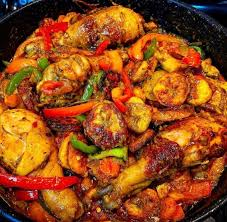

Poulet DG Recipe

Description
Poulet DG is a delicious and flavorful Cameroonian dish made with chicken, plantains, and vegetables. It’s perfect for family gatherings and special occasions.
Ingredients
- 1 whole chicken (cut into pieces)
- 4 ripe plantains (peeled and sliced)
- 2 carrots (sliced)
- 1 green bell pepper (sliced)
- 1 red bell pepper (sliced)
- 2 onions (chopped)
- 3 cloves garlic (minced)
- 1 teaspoon thyme
- 1 teaspoon white pepper
- 1/4 cup vegetable oil
- Salt and pepper to taste
- 1 chicken bouillon cube
Steps
- Season the chicken pieces with thyme, white pepper, salt, and garlic. Let it marinate for at least 30 minutes.
- Heat oil in a large pot and fry the chicken until golden brown. Remove and set aside.
- Fry the plantain slices in the same oil until golden, then set aside.
- In the same pot, sauté the onions, carrots, and bell peppers until soft.
- Add the fried chicken back into the pot along with the bouillon cube. Stir well.
- Add a small amount of water, cover, and let it cook for about 20 minutes.
- Finally, add the fried plantains to the pot and mix gently. Cook for another 5 minutes, allowing the flavors to combine.
- Serve hot and enjoy!